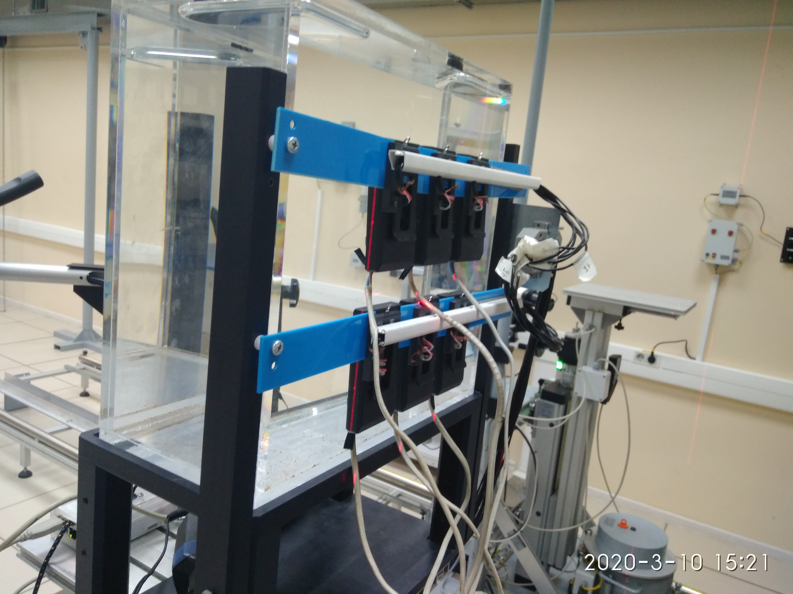
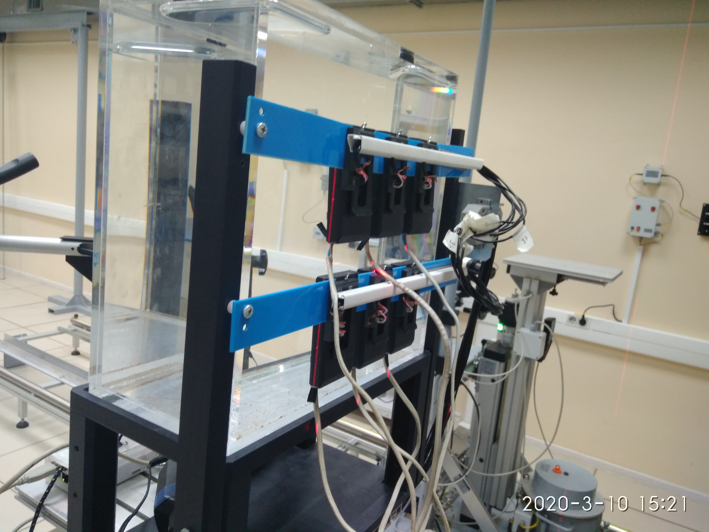
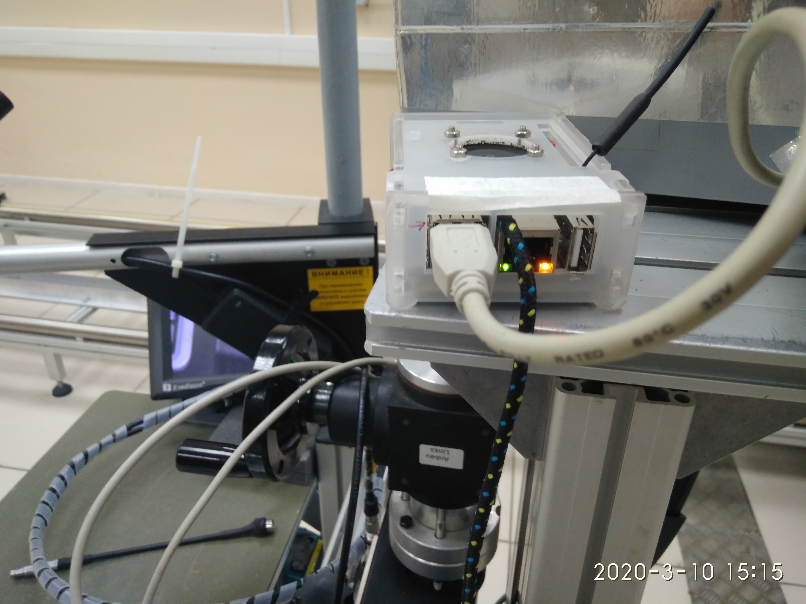
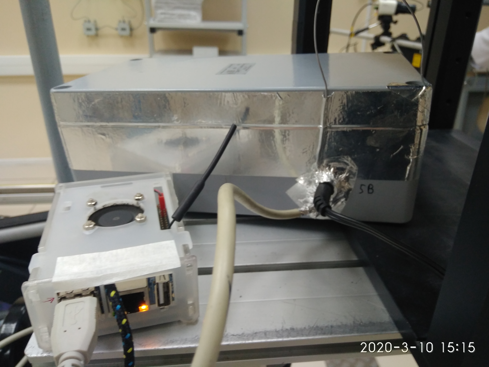
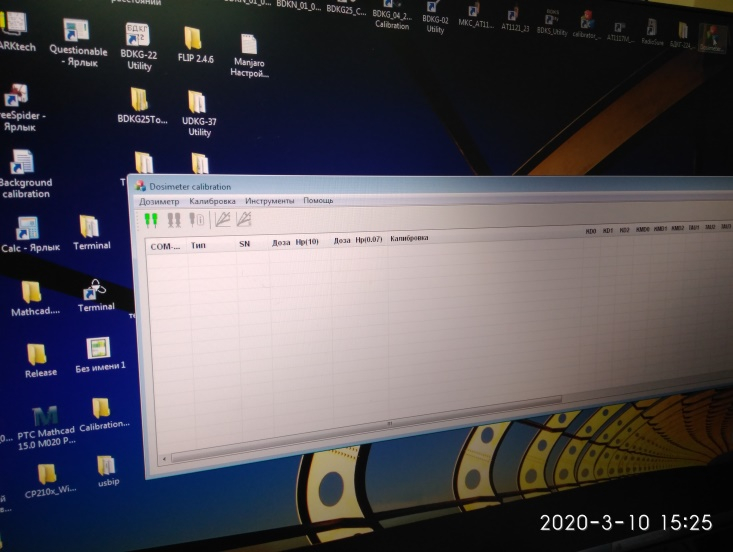

Градуировка ДКГ-АТ2503А
ЛИНЕЙНОСТЬ
Установить дозиметры 6шт на фантом предварительно подключив к внешнему питанию.
Дозиметры размещают передней панелью вплотную к передней стенке фантома, которая должна быть обращена к источнику излучения. При этом нормаль, проведенная из геометрического центра передней стенки фантома, должна совпадать с центральной осью коллиматора поверочной дозиметрической установки и проходить через реперную точку дозиметра.
Размер поля излучения должен быть достаточным для полного перекрытия передней стенки фантома и варьируется расстоянием источник-детектор или диаметром выходного окна коллиматора поверочной дозиметрической установки. При этом расстояние источник-детектор должно составлять не менее 1 м.
 

Подключить к внешнему питанию


Подключить USB hab к Фантому
Включить Orangpay (Мини ПК) (microUSB) и USB hab (+5В) при помощи сетевых адаптеров

Подключите адаптер внешнего питания (+3,5 ;+4,5В) через сетевой адаптер в сеть

Включить в сеть Маршрутизатор


Через 1 мин запустить файл 1.bat путь рабочий стол USBIP/bat/1.bat
Запустятся 6 окон с счётом данных по протоколу обмена
Запустить ПО Dosimeter Calibration
Нажмите кнопку подключить
После входа в обмен выберете калибровка и тип дозиметров для калибровки
Запустить ПО CalculationSources, расстояния выбирать из расчета индивидуального эквиалента мощности дозы Hp(10)
Следуя указаниям программы по выставлению контрольных точек и напряжений питания отградуируйте дозиметры
После программного расчёта коэффициентов проведите ПСИ Переключите дозиметры в режим индивидуального эквивалента мощности дозы
Установите контрольные точки 40мк,4м,80мЗв/ч и 400мЗв/ч(2503) Данные записать в электронный журнал градуировки
ЭНЕРГЕТИКА
Установить 3 шт. БОИ 2 в держателе на поверочную дозиметрическую установку УДГ-АТ110 таким образом, чтобы центральная ось коллимированного пучка гамма-излучения установки была перпендикулярна задней стенке, а расстояние от источника до центра детектора было выставлено по красной метке на верхней поверхности БОИ 2.
Дозиметры размещают передней панелью вплотную к передней стенке фантома, которая должна быть обращена к источнику излучения. При этом нормаль, проведенная из геометрического центра передней стенки фантома, должна совпадать с центральной осью коллиматора поверочной дозиметрической установки и проходить через реперную точку дозиметра.
Размер поля излучения должен быть достаточным для полного перекрытия передней стенки фантома и варьируется расстоянием источник-детектор или диаметром выходного окна коллиматора поверочной дозиметрической установки. При этом расстояние источник-детектор должно составлять не менее 1 м.

Запустить ПО CalculationSources расстояния выбирать из расчета индивидуального эквиалента мощности дозы Hp(10)
Проверить Cd 1м, Am 1м, 60Co 10 мкЗв/ч
Данные переписать в электронный журнал градуировки